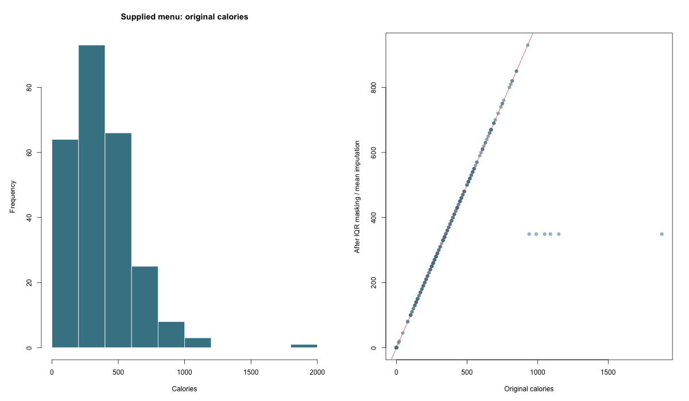

ABHINAV TANWAR · R ANALYSIS
Menu Nutrition Analysis
Nutrition exploration, correlated-feature grouping, and explicit outlier-treatment comparisons.
Scope and methods
Uses the locally found original menu CSV. Numeric correlations are descriptive; percentage daily-value versions are grouped with their base nutrient when ranking correlations with calories. The source IQR masking and mean-imputation workflow is preserved as a sensitivity comparison, not as an assertion that calorie-dense foods are erroneous records. Original and modified summary statistics are both reported.
Measured results
| Calculated measure | Value |
|---|---|
| rows | 260 |
| numeric features | 21 |
| masked values | 231 |
Nutrition

Full result structure
{
"rows": 260,
"numeric_features": 21,
"second_third_positive": [
"Total Fat",
"Saturated Fat (% Daily Value)"
],
"negative_correlations": "Vitamin C (% Daily Value)",
"masked_values": 231,
"scope": "descriptive sensitivity analysis; high nutrient values can be valid and are not asserted to be errors"
}